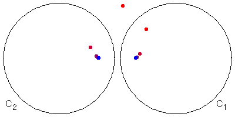
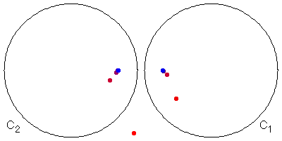
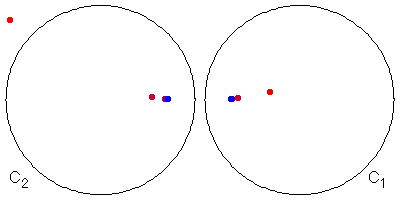

|  |
Take two circles, C1 and C2, and an initial point P1 outside both circles.
| Pick one of the circles, say C1 and invert P1 in C1, obtaining the point P2. |
| Because we have just inverted in C1, we do not immediately invert in C1 because by property (v) of inversion that would just return us to P1. So we invert P2 in C2, obtaining P3. |
| Similarly, we invert P3 in C1, obtaining P4. |
| Continue on this fashion. In the picture above, the points shade from red to blue as this process continues. |
| It appears as though the sequence of points Pi approaches two points, one in each circle Ci. That is, the limit set L(C1, C2) appears to consist of two points, call them P and Q. |
Does the limit set depend on the choice of the initial point? No. Here are two examples.
|  |
|  |
A more careful argument shows why this is so.
Return to Limit Sets and Inversion.